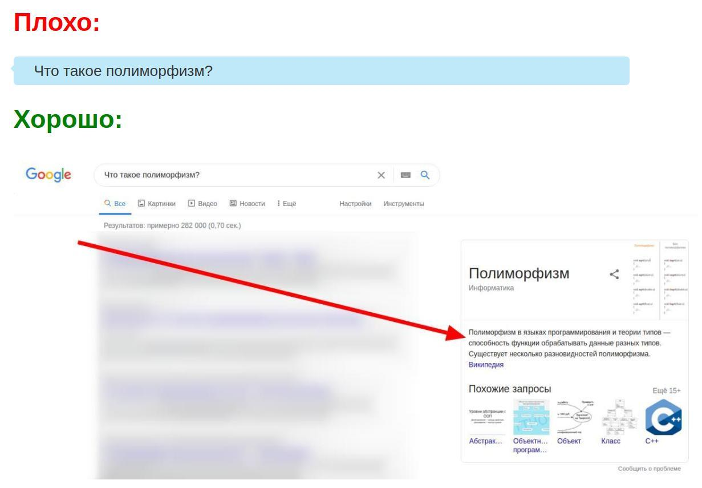

Пожалуйста, научитесь искать ответы на вопросы!
Легко же загуглить, правда?
Что такое массив?
Зачем нужен PHP?
Что такое сортировка пузырьком?
Такого рода вопросы не нужно нужно в первую очередь гуглить!
Гуглить значит:
Но что плохого в том, что вы задаете такие вопросы в чатах/форумах?
Почти все ваши вопросы недавно или давно не искал искал. Это значит, что вы найдете это в гугле и не будете тревожить других людей в чатах/форумах
То есть задавать вопросы в чатах/форумах запрещено/неэтично/плохо?
Не совсем. Если у Вас возник вопрос, сначала прогуглите его, затем, если не нашли ответа, можете задать свой вопрос в чатах/форумах.
Суть одной картинкой:
